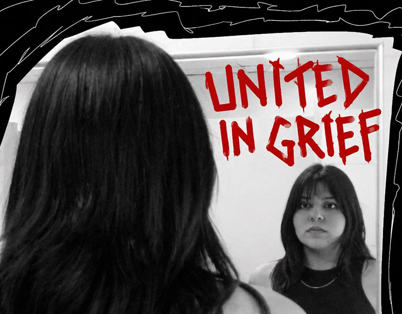

Mi pequeño
Una animación tipográfica para «Mi pequeño» de Ramma: la canción se cuenta solo con letras, en cuatro colores y con cortes al ritmo de la voz.
- Año
- 2025
- Qué es
- Animación tipográfica
- Duración
- 0:10
- Programas
- After Effects e Illustrator
Animación completa
Animación completa · 0:10 · con sonido
La portada
El título en letra gruesa e inclinada, en crema y magenta sobre azul: los mismos colores que después aparecen en la animación.
Cuadros clave
Siguiente: United in Grief
